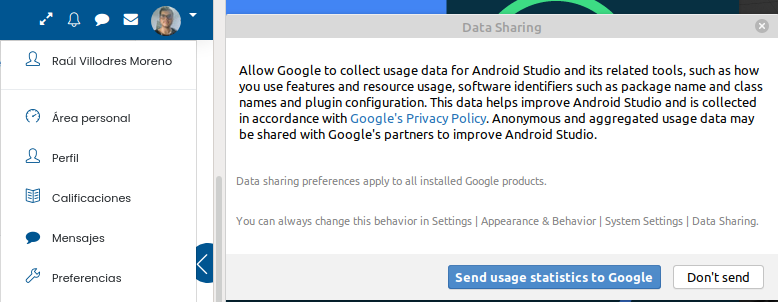
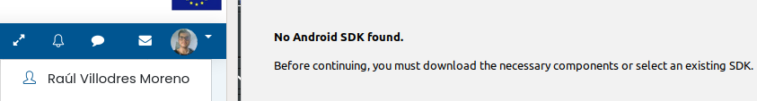

VERSIÓN DE JDK USADO
Para comprobar la versión JDK que hemos utilizado debemos de usar el comando "java -version" en la terminal de comandos.
En mi caso, la versión de java se trata de la "11.0.8".
CARACTERÍSTICAS HARDWARE DEL EQUIPO EMPLEADO.
CARACTERISTICAS
DEL HARDWARE DEL PC:
Para poder comprobar las carácteristicas del hardware que emplearemos, debemos de hacer uso del comando"lscpu" en la terminal. Este es el resultado que devuelve mi ordenador.


MODELO Y HARDWARE DE MI MÓVIL:
Para acceder al modelo de nuestro móvil y su número de serie, debemos de acceder (al menos en el caso de mí teléfono móvil) al apartado "Información del teléfono" y aquí buscar el apartado "Modelo y hardware". Mi móvil es un "Xiaomi A2 Lite", y su número de serie es "73a901ba0405".

SISTEMA OPERATIVO USADO
PC:
Hay varios métodos de instalar Android studio, diferentes en linux
dependiendo de la versión o en windows. La instalación fue realizada en el
sistema operativo. En este caso en Linux Mint 20, usando el kernel Linux
5.4.0-26-generic. Cómo podemos comprobar usando el comando "sudo
hostnamectl"

VERSIÓN DE ANDROID DEL MÓVIL:
Para ver el sistema operativo y los detalles del mismo, desde el apartado "información del teléfono", del menú de ajustes, seleccionamos "Version de Android". Mi Android es de versión 10, con todas las actualizaciones al día. Además, desde este apartado se pueden ver también la versión de la banda base, del kernel y el número de compilación.

GUIA DE INSTALACIÓN DE ANDROID STUDIO
Descargaremos Android studio desde el siguiente enlace: "https://developer.android.com/studio?hl=es-419". Dando click en el botón verde con el texto"DOWNLOAD ANDROID STUDIO".
Sin embargo, si no detecta automáticamente tu sistema operativo, deberás darle al hipertexto donde pone "Download options".

De la lista escogeremos aquella versión del sistema operativo que utilizamos.
Para terminar, aceptamos los terminos y condiciones si estamos de acuerdo con ellos y pulsamos el botón de descargar.

Guardamos el resultado de la descarga en una carpeta y la descomprimimos el archivo, el resultado será una carpeta con el nombre "Android studio".
Ahora que está descomprimido, abreremos la carpeta "android-studio", seguido de su carpeta "bin", una vez abierta esta última carpeta, darémos doble click en el documento .sh llamado "studio.sh".
Damos doble click y seleccionaremos la opción "Ejecutar en un terminal". Una vez le demos se nos abrirá en primer lugar la terminal, acto seguido mostrandonos una ventana de instalación.
En primer lugar se nos preguntará si deseamos enviar información a google, en mi caso personal, prefiero no enviar información por el bien de la seguridad, asi que seleccionaré el botón "Don´t send".

Con esto se nos abrirá por completo el menú de instalación. Sin embargo, una vez se abre, nos muestra que no hay instalado un SDK de Android, le damos a siguiente y la ventana nos mostrará detalles de la instalación de un SDK de java.

Aquí se nos mostrarán varias casillas de verificación. En mi caso he marcado las dos casillas que se podían marcar, y dejando la localización predeterminada de instalación del SDK. La primera casilla representa instalar SDK de Android, mientras que la otra se tratad de un API, que son unas herramientas para ampliar nuestras posibilidades.

En caso de que tengamos arquitectura de 64 bits en nuestro dispositivo, será necesario instalar ciertas librerías. Estas librerias pueden instalarse todas si se escribe el siguiente comando en la terminal: "sudo apt-get install libc6:i386 libncurses5:i386 libstdc++6:i386 lib32z1 libbz2-1.0:i386"

Sin embargo, al usar el comando "sudo kvm-ok", que nos dice si tenemos o no el kvm, nos dice que nuestro ordenador no es compatible con las extensiones kvm.
VERSIÓN DE ANDROID STUDIO
Podemos fijarnos en nuestra versión de Android studio al instalarla desde los pasos de la guia anterior, sin embargo, voy a mostrar como ver dicha versión desde el propio programa.
Para ello debemos de abrirlo y hacer click en el botón de abajo a la derecha con texto "configure" y el icono de un engranaje. Una vez demos click, se nos abrirán varias opciones, seleccionaremos "settings" y terminaremos dando click en el apartado "Updates"

VERSIÓN DEL SDK INSTALADO
Para ver la versión del sdk instalada, también debemos de abrir el apartado de configuración que abrimos previamente, y seleccionaremos el apartado "Android SDK".
Desde este apartado podemos seleccionar que versión deseamos instalar. En mi caso, he aprovechado para instalar la SDK de "Android 8.1", ya que es la que se pide en esta práctica, y desinstalar el SDK de "Android 11". Marcando el 8.1 y desmarcando la de 11, acto seguido pulsando el botón de "Apply".

CONFIGURACIÓN DE UN EMULADOR O UN MÓVIL
PROBAR APP EN EMULADOR:
Para
probar la aplicación desde el emulador, comenzaremos por crear una
instancia del mismo, para ello seleccionaremos el botón con el icono
de un teléfono móvil con el logo de android en su esquina inferior
derecha. Una vez le demos click, se nos abrirá una nueva ventana que
nos permite crear el emulador, le daremos a "Create Virtual device"

Desde
aquí, debemos ahora de seleccionar el móvil a emular, en mi caso he
optado por uno de los móviles más estándar, el "Pixel 2 5.0 1080x1920
xxhdpi", luego le damos a android y debemos de seleccionar una versión
de Android, en mi caso elegí la de API 27, aquella que emula Android
8.1.
Cuando
le demos a siguiente se nos mostrará una ventana donde podremos
previsualizar la configuración de nuestro emulador, además de ponerle
un nombre, en mi caso opté por uno simple y autodescriptivo:
"Emulador"

PROBAR APP EN MÓVIL:
Para
verlo en nuestro teléfono móvil,
debemos en primer lugar de activar las opciones de desarrollador, para
activar la depuración USB en nuestro teléfono móvil. Esto se puede
hacer desde el propio teléfono buscando el número de compilación y
tocándolo varias veces (Esta es la forma de hacerlo en mi teléfono
móvil, dependiendo del teléfono, puede que las opciones de
desarrollador se activen con un método alternativo.)

Ahora accederemos a las opciones de desarrollador y activaremos la "Depuración USB", en el caso de mi teléfono móvil, esta opción aparece en el apartado de ajustes "Sistema", en las "opciones avanzadas". Una vez ahí, se buscaría la titulada "opciones para desarrolladores", y de estas opciones vamos al apartado"Depuración" y seleccionamos "Depuración por USB".

Normalmente ya funcionaría, sin embargo, mi teléfono móvil de forma predeterminada limita el compartir datos con el ordenador al que se conecte, por lo que antes de usarlo para ejecutar nuestra app, en mi caso debo de acceder a los ajustes de "dispositivos conectados" y al apartado que aparece cuando se conecta via USB al ordenador llamado "Preferencias de USB". De forma predeterminada el "UTILIZAR USB PARA" se situa en "No transferir datos", pero nosotros debemos de seleccionar "Transferencia de datos"

Sin embargo, habría que marcarlo cada vez que se conecta nuestro móvil a un ordenador, para hacer que de forma predeterminada se coloce en "Transferencia de archivos" debemos de volver a las herramientas de desarrollador, buscar una llamada "configuración USB predeterminada" y seleccionar "Transferencia de archivos"

COMO EJECUTAR LA APLICACIÓN
Es bastante simple una vez tienes disponibles uno de los dos métodos citados previamente o ambos preparados. Para probarlo, deberemos de buscar el desplegabe que se encuentra justo a la izquierda del botón con icono de "start". Y del desplegable seleccionamos que opción queremos utilizar. En mi caso aparecen emulador teléfono móvil ya que los configuré antes.

CREACIÓN DE LA APLICACIÓN
Comenzaremos creando la aplicación, nada más abrir android studio, seleccionaremos "Create new project" y marcaremos la opción de texto "Empty activity", para partir desde cero.

Cuando
le demos a siguiente, debemos de seleccionar los ajustes de la
aplicación. En mi caso, he usado el nombre de la práctica como nombre
del proyecto, he dejado la localización como la predeterminada, he
seleccionado como lenguaje de aplicación Java, y como SDK mínimo el 27
(Android 8.1 (oreo)), que es el que se pide para la práctica

Tras esto ya podemos comenzar la creación del proyecto.